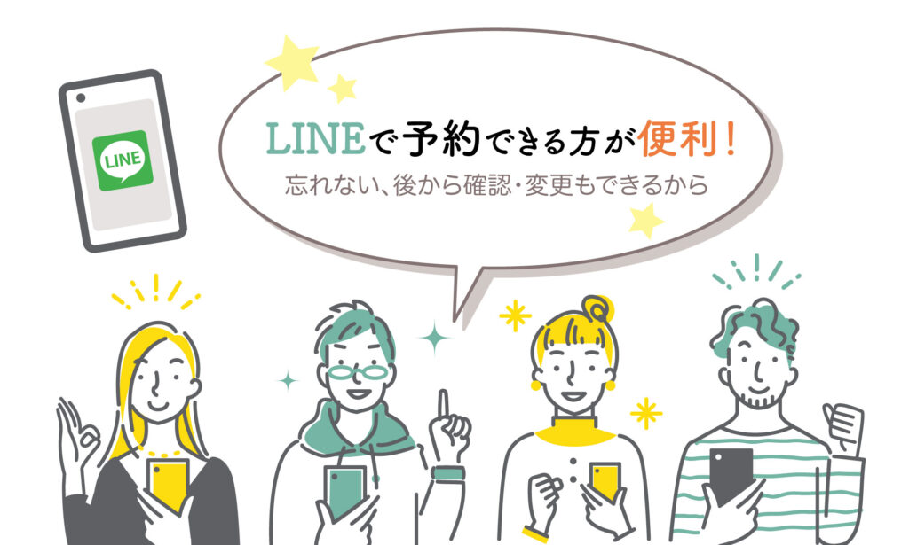
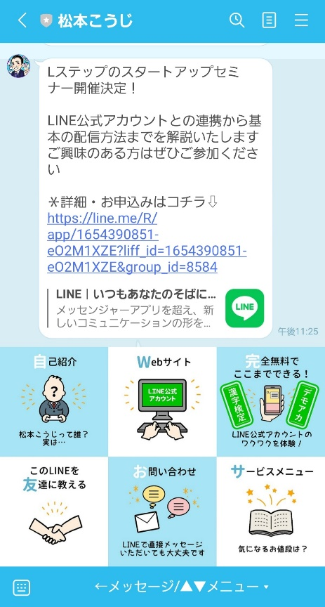

#044_質問回答箱続き！

こんにちは！matsumotoです。前回に続き、今回も以前募集した質問の中から問い合わせの多かった内容についてお答えしていきます。
リッチメニューどうしたらいいですか？
今までも何度か取り上げているリッチメニューですが、いまだに「リッチメニューってつけた方がいいですか？」「リッチメニューをどうしたら良いでしょうか」というご相談があります。
答えはもちろん『つけた方がいいです』となります。

リッチメニューは“LINE公式アカウントの顔”です！！ リッチメニューを作らないと、せっかく友だち登録してもらっても公式アカウントであることすら分かりません。また、リッチメニューをタップしてもらえばあなたのお店や会社の情報が出てくるという、とても重要な役割を担っています。
リッチメニューが充実しているだけで、何か購入してくれるかもしれないし、問い合わせが来るかもしれません。ただ あればいいというものではなく、先程も言ったようにLINE公式アカウントの顔なので、“良いもの”にしましょう。
それには、お友だち登録者が触りたくなるような“導線組み”や“デザイン”が必要になります。
１）リッチメニュー：自作派
デザインに自信がある方なら、過去に紹介した「#004自分でリッチメニューをデザインする」の記事を参考に、Canvaなどで作るのも良いです。Canvaは、最近オンラインで使い方を学べるスクールもあるほど便利なツールです！
２）リッチメニュー：自作は無理💧
自作が無理な場合は、“ココナラ”などで活動しているデザイナーさんに依頼するのが一般的です。ここで注意するべきポイントは「値段で選ばない」こと。とにかく多くのデザイナーさんを見つけて過去のデザインを確認してください。
写真を使用するのが得意な方、イラストや似顔絵を得意とする方といろいろです。
リッチメニューのデザインだけでなく、サムネイルなどのデザインも確認し、メールでやり取りをして本当に気に入った方にお願いするようにしましょう。
３）リッチメニュー制作のポイント
リッチメニューで最も重視すべきポイントは 『リッチメニューの６項目になにを持ってくるのか』になります。ココはLINE公式アカウント・リッチメニューについての知見があるかないかで大きな差が出てきます。

【自作リッチメニューでやりがちな失敗】
①ブランディングされていない
②売りたいものばかり詰め込まれている
③統一感がない
・・・などです。
こういう事が起きる原因のひとつが、大手企業のLINE公式アカウントのリッチメニューをそっくり真似してしまうということです。これは絶対にNGです！
大企業は既に商品のブランディングができているので、“売り”を前面にだした単純なリッチメニューが多いです。それを中小企業がそのまま真似してしまうと失敗してしまいます。
欲を言えば 、アカウントを飽きさせないためにも定期的にリニューアルし楽しんでいただく工夫をすることが望ましいです。
３）まとめ
いろんな情報が詰まってるからこそリッチメニューの役割は重要です！ひとつのリッチメニューでいきたいと思っているなら、絶対にお金を掛けてでも良いものをつくる事をおすすめします。
リッチメニューの項目のみのご相談だけでもお受けしますので、ぜひmatsumotoまでご連絡ください。
●LINE公式アカウントをオススメする理由はこちら
●LINE公式アカウントでできることはこちら
●Lステップでできることはこちら